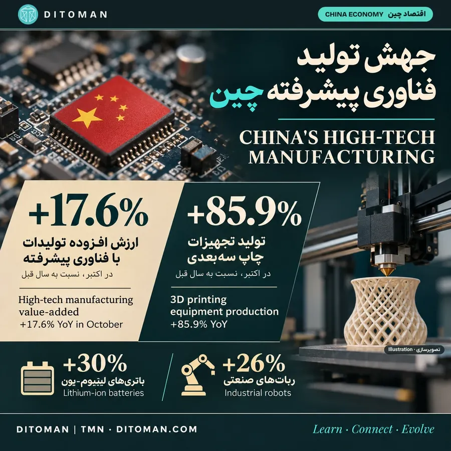
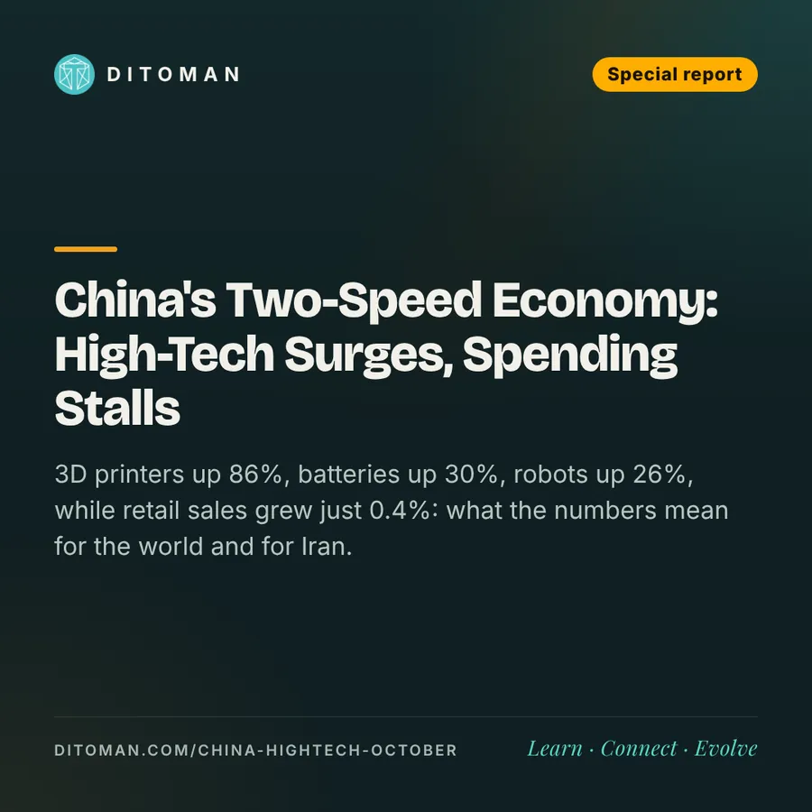

کارخانههای چین دو سرعته شدهاند؛ فناوری پیشرفته پرواز میکند، مصرف درجا میزند
China's two-speed economy: high-tech output surges while spending stalls
رشد ۸۶ درصدی چاپگرهای سهبعدی، ۳۰ درصدی باتری و ۲۶ درصدی ربات، در کنار خردهفروشی ۰٫۴ درصدی؛ معنای این اعداد برای جهان و ایران.
3D printers up 86%, batteries up 30%, robots up 26%, while retail sales grew just 0.4%: what the numbers mean for the world and for Iran.
در یک نگاه
ادارهی ملی آمار چین روز ۱۶ نوامبر ۲۰۲۶ آمار اقتصادی اکتبر را منتشر کرد. تصویر کلی، یک اقتصاد دو سرعته است: صنایع فناوری پیشرفته با سرعتی کمسابقه رشد میکنند، در حالی که مصرف خانوارها و سرمایهگذاری تقریباً متوقف شدهاند.
| شاخص (اکتبر، نسبت به اکتبر پارسال) | رقم |
|---|---|
| تولید صنایع فناوری پیشرفته | +۱۷٫۶٪ |
| تولید تجهیزات چاپ سهبعدی | +۸۵٫۹٪ |
| تولید باتری لیتیومیونی | +۳۰٪ |
| تولید ربات صنعتی | +۲۶٪ |
| تولید ماشینآلات و تجهیزات | +۱۰٫۶٪ |
| کل تولید صنعتی | +۴٫۸٪ (پیشبینی: ۵٫۳٪) |
| خردهفروشی کالاهای مصرفی | +۰٫۴٪ (پیشبینی: ۰٫۸٪) |
| سرمایهگذاری ثابت، ژانویه تا اکتبر | −۸٫۱٪ |
1. موتور پرسرعت: فناوری پیشرفته
تولید صنایع فناوری پیشرفته در اکتبر ۱۷٫۶٪ رشد کرد؛ بیش از سه برابر رشد کل صنعت. مهمترین محصولات:
- چاپگرهای سهبعدی: ۸۵٫۹٪ رشد؛ تقریباً دو برابر شدن تولید در یک سال
- باتری لیتیومیونی: ۳۰٪ رشد؛ برای خودروهای برقی، ذخیرهی انرژی خورشیدی و بادی و وسایل الکترونیکی
- ربات صنعتی: ۲۶٪ رشد؛ نشانهی خودکار شدن سریع کارخانهها
- خودروهای انرژی نو: ۲٫۰۲۷ میلیون دستگاه، ۱۷٫۱٪ رشد؛ در حالی که کل تولید خودرو ۷٫۷٪ کاهش یافت و به ۳٫۰۴۵ میلیون رسید. یعنی تقریباً دو سوم خودروهای ساخت چین در این ماه برقی یا هیبریدی بودند
- ماشینآلات و تجهیزات: ۱۰٫۶٪ رشد
2. موتور کند: مصرف و سرمایهگذاری
| شاخص | رقم |
|---|---|
| خردهفروشی، اکتبر | +۰٫۴٪ |
| سرمایهگذاری ثابت، ۱۰ ماه | −۸٫۱٪ |
| سرمایهگذاری در توسعهی مسکن | −۲۱٫۶٪ |
| سرمایهگذاری بخش خصوصی | −۱۱٫۴٪ |
| سرمایهگذاری در صنایع فناوری پیشرفته | +۴٫۰٪ |
| فروش مسکن نو (ارزش، ۱۰ ماه) | −۱۴٫۳٪ |
| نرخ بیکاری شهری | ۵٫۱٪ (از ۵٫۲٪) |
| شاخص مدیران خرید تولید | ۴۹٫۳ (زیر مرز رشد ۵۰) |
هر سه شاخص اصلی، یعنی تولید صنعتی، خردهفروشی و سرمایهگذاری، از پیشبینیها ضعیفتر بودند. لین سانگ، اقتصاددان ING، سال ۲۰۲۶ را «یکی از ضعیفترین سالهای تقاضای داخلی در تاریخ اخیر» چین توصیف کرده است.
خود ادارهی آمار چین هم گفته عدم تعادل بین عرضهی قوی و تقاضای داخلی ضعیف همچنان جدی است.
3. چرا چاپ سهبعدی اینقدر مهم است؟
چاپ سهبعدی (ساخت افزایشی) قطعه را لایهلایه از روی فایل دیجیتال میسازد.
- بدون قالب: برای ساخت یک قطعهی تازه، لازم نیست قالب گران و زمانبر ساخته شود
- نمونهسازی سریع: از ایده تا نمونه در چند روز، نه چند هفته
- قطعات پیچیده و سبک: ساختارهای مشبک و توخالی که با تراش یا ریختهگری ساختنی نیستند
- قطعهی یدکی در محل: بهجای انبار کردن هزاران قطعه، فایل نگه داشته میشود و هر وقت لازم بود چاپ میشود
- کاربردها: خودرو، هوافضا، پزشکی و دندانپزشکی، قالبسازی، معماری و آموزش
وقتی تولید این دستگاهها در یک سال تقریباً دو برابر میشود، قیمتشان پایینتر میآید و برای کارگاههای کوچکتر هم قابلخرید میشوند.
4. باتری و ربات: دو موتور دیگر
باتری: رشد ۳۰ درصدی تولید باتری لیتیومی با رشد خودروهای برقی و ذخیرهسازهای انرژی همخوان است. چین بیش از ۸۰٪ ظرفیت تولید جهانی سلول باتری را در اختیار دارد؛ پس تولید بیشتر چین، مستقیماً روی قیمت جهانی باتری اثر میگذارد.
ربات: رشد ۲۶ درصدی رباتهای صنعتی نشان میدهد کارخانههای چینی در حال جایگزینی کارهای تکراری، سنگین و دقیق با ماشیناند؛ بخشی از پاسخ چین به افزایش دستمزدها و پیر شدن جمعیت.
5. این اعداد را چطور بخوانیم؟
- رشد سالانه است، نه سهم بازار: همهی درصدها نسبت به اکتبر پارسالاند؛ یعنی سرعت رشد تولید، نه اندازهی سهم چین از تولید جهانی
- پایهی آماری: در محصولاتی مثل چاپگر سهبعدی، پایهی پارسال کوچکتر است؛ پس درصدهای بزرگ راحتتر به دست میآیند
- تولید با فروش یکی نیست: رشد تولید لزوماً به معنای همانقدر رشد فروش یا سود نیست، بهویژه وقتی تقاضای داخلی ضعیف است
6. اثر بر جهان
- فشار رو به پایین بر قیمتها: وقتی عرضه زیاد و تقاضای داخلی کم است، بخش بیشتری از تولید به صادرات میرود؛ این میتواند قیمت جهانی باتری، ربات و تجهیزات را پایین بیاورد
- رقابت سختتر برای تولیدکنندگان دیگر: کارخانههای اروپا، ژاپن و کره با رقیبی ارزانتر روبهرو میشوند
- سیاست تجاری: افزایش صادرات چین معمولاً با واکنش تعرفهای کشورهای دیگر همراه میشود
7. برای ایران و منطقه
- دسترسی آسانتر به ابزار: چاپگر سهبعدی، ربات صنعتی و باتری میتواند برای کارگاهها، دانشگاهها و شرکتهای کوچک ارزانتر شود
- قطعهی یدکی: برای صنایعی که با کمبود قطعه روبهرو هستند، چاپ سهبعدی میتواند راهی برای ساخت قطعات کمیاب در داخل باشد
- ذخیرهی انرژی: باتری ارزانتر یعنی ذخیرهسازی برق خورشیدی مقرونبهصرفهتر برای خانهها و کسبوکارها
- شرط موفقیت: قیمت نهایی، خدمات پس از فروش، دسترسی به قطعات و مواد مصرفی، آموزش نیروی کار و هزینهی واردات
دادهای دربارهی حجم واردات این تجهیزات به ایران در دسترس نیست.
8. نگاه دیتومان
چین دارد کارخانهی دنیا را از «ارزانسازی» به «هوشمندسازی» میبرد. اما همین گزارش نشان میدهد که موتور فناوری، بهتنهایی کل اقتصاد را جلو نمیبرد؛ مصرف و اعتماد مردم هم لازم است.
آیندهی تولید فقط مال بزرگها نیست؛ ابزارهایی مثل چاپگر سهبعدی و ربات، کارگاههای کوچک را هم به بازی برمیگردانند.
برای کسبوکارهای کوچکتر، فرصت واقعی این است که این ابزارها را به محصولی کاربردی و قابلفروش تبدیل کنند.
بیشتر بخوانید
منابع
- Xinhua: China’s high-tech manufacturing powers October industrial growth
- SMM / NBS: October value-added industrial output up 4.8%, product details
- ActionForex: China industrial output slows to 4.8%, retail sales 0.4%
- Business Standard: China economy slows in October as data miss forecasts
- IEA: Global EV Outlook 2026, batteries (China capacity share)
آخرین بازبینی: ۲۲ آبان ۱۴۰۵. همه درصدها رشد نسبت به اکتبر ۲۰۲۵ است، نه سهم چین از بازار جهانی.